February 27, 2015
Introduction
Evaluating Biomarkers: Practice
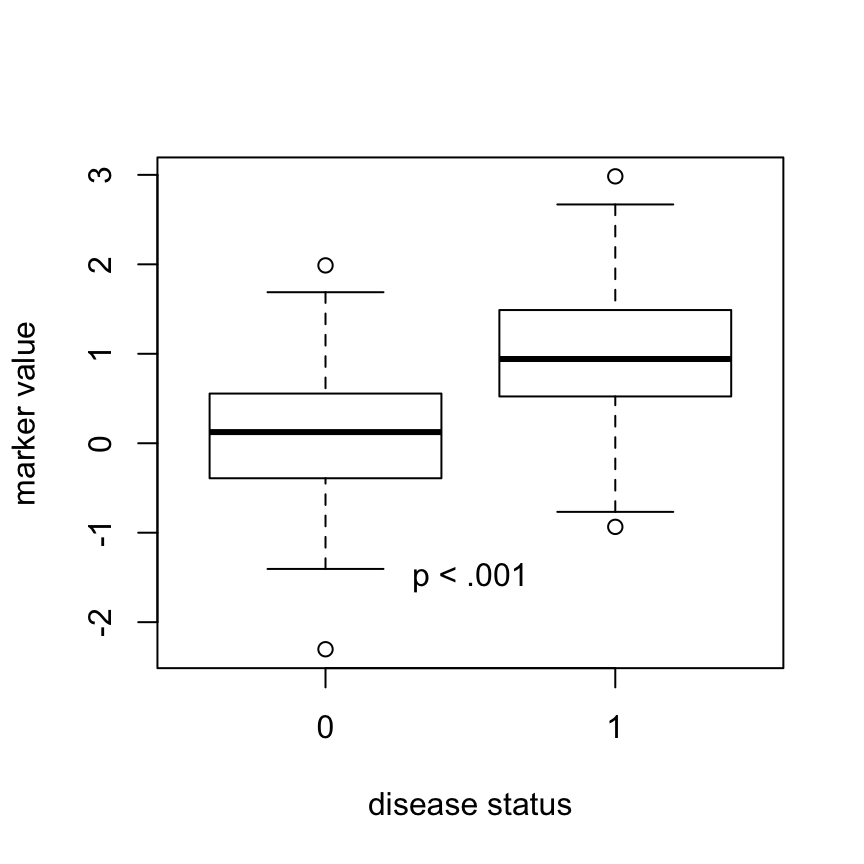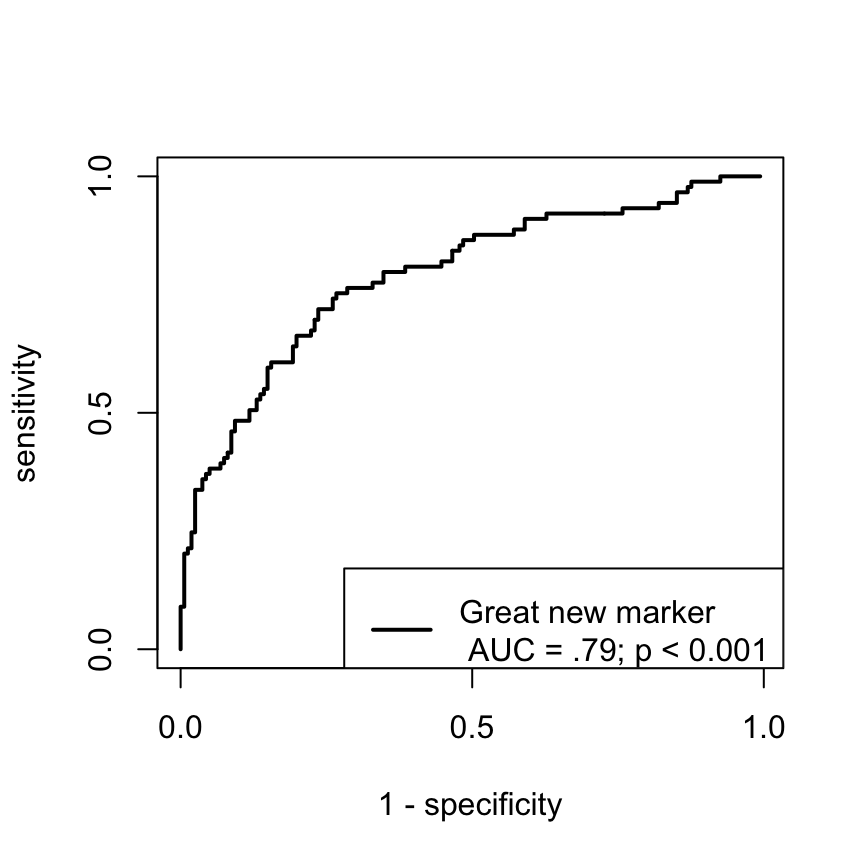
Evaluating Biomarkers: Practice
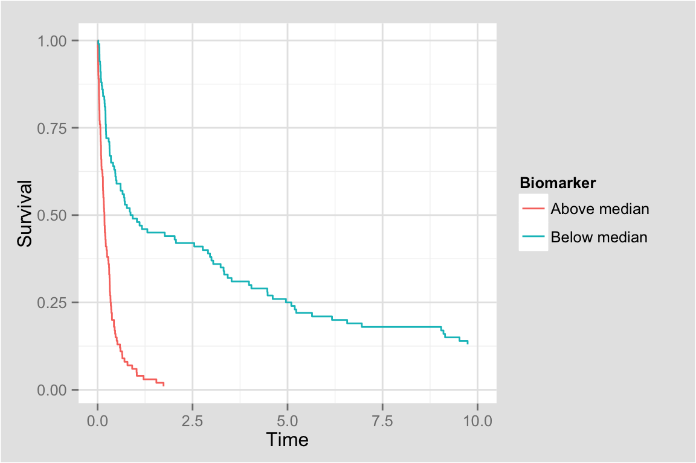
Evaluating Biomarkers: Practice
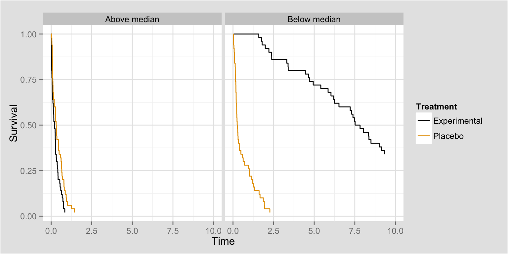
Evaluating Biomarkers: Theory
| Search Term | Results |
|---|---|
| Clinical Trial(s) | 9593 |
| Survival | 6353 |
| Longitudinal | 4332 |
| Biomarker(s) | 1697 |
| Genomic(s) | 1404 |
Search results from Google scholar restricted to journals: Statistics in Medicine, Biometrics, Biostatistics, Biometrical Journal
About me
- Mathematical Statistician at the NCI
- Review biomarker-related aspects of cancer clinical trials
- Collaborate with other programs across the NCI and NIH
- Conduct research in Biostatistics
Disease areas:
- Prostate, AIDS-related, Head & Neck, Bladder/Renal/Colon, Melanoma, Pancreatic, CNS/Brain
- Previous experience in kidney disease, diabetes, heart disease, Alzheimer's disease
Other interests:
- Reproducible research, statistical computing, data visualization
The Basics
Uses of biomarkers/imaging tests in oncology
- Screening (mammography, HPV test)
- Diagnosis (HER-2, PSA)
- Prognosis, predicting future recurrence (Oncotype, Mammaprint)
- Treatment selection (ER, ALK, KRAS)
- Surrogate endpoints (tumor growth rate, MRD)
Biomarker statistics 101
Binary biomarker and Binary outcome
| Disease or Event | ||||
| Total population | Disease positive | Disease negative |
Prevalence = Σ Condition positive
Σ Total population
|
|
|
Test outcome |
Test outcome positive |
True positive |
False positive |
Positive predictive value (PPV) = Σ True positive
Σ Test outcome positive
|
|
Test outcome negative |
False negative |
True negative |
Negative predictive value (NPV) = Σ True negative
Σ Test outcome negative
|
|
|
True positive fraction (TPF, Sensitivity) = Σ True positive
Σ Disease positive
|
False positive fraction (FPF) = Σ False positive
Σ Disease negative
|
Accuracy (ACC) = Σ True positive + Σ True negative
Σ Total population
|
||
|
False negative fraction (FNF) = Σ False negative
Σ Disease positive
|
True negative fraction (TNF, Specificity) = Σ True negative
Σ Disease negative
|
|||
Probabilities and Proportions
Quality of test-based classifications:
\[ TPF = Pr\{\mbox{Marker positive} | \mbox{Has condition} \} = Pr\{M = 1 | D = 1\} \]
\[ FPF = Pr\{M = 1 | D = 0 \} \]
Ideal: TPF = 1, FPF = 0; Bad: TPF = FPF
Predictions
\[ PPV = Pr\{D = 1 | M = 1\} \]
\[ NPV = Pr\{D = 0 | M = 0\} \]
Ideal: PPV = NPV = 1; Bad: PPV = \(Pr\{D = 1\}\); NPV = \(Pr\{D = 0\}\)
One statistic not enough
All of the information in that table can be obtained given only 3 of the quantities:
- Usually, \((TPF, FPF, Pr\{D = 1\})\)
- Occassionally, \((PPV, NPV, Pr\{M = 1\})\)
Why? Bayes Rule: \(Pr\{M = 1 | D = 1\} =\)
\[ \frac{Pr\{M = 1 \mbox{ AND } D = 1\}}{Pr\{D = 1\}} = \frac{Pr\{D = 1 | M = 1\} Pr\{M = 1\}}{Pr\{D = 1\}} \]
- Most commonly, only a HR or OR is reported
- HR/OR are insufficient to evaluate a test proposed for use in individuals (Pepe et al. 2004 AJE)
ROC Curves
Extension 1
What if the test yields a continuous measurement?

Oncotype DX
- Risk score for recurrence of breast cancer
- Based on expression of a panel of 21 genes
- Measured using RT-PCR on archival tumor specimens
- Example data (n = 207) from a clinical case series in the Netherlands
- Outcome is recurrence within 5 years
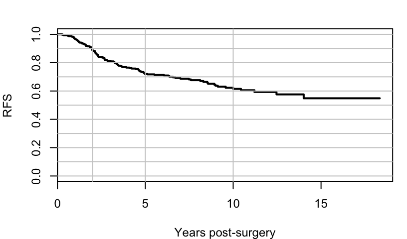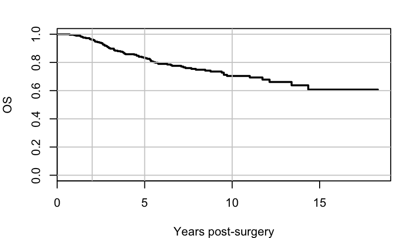
References: Paik et al., 2004, van de Vijver et al., 2002, van't Veer et al., 2002
Solutions
Goal is to assess accuracy using the aforementioned measures
- Pick an arbitrary cutoff, say \(c\).
- Now test positive is defined as \(M > c\)
- Consider measures as functions of \(c\), i.e. \[ TPF(c) = Pr\{M > c | D = 1\} \] \[ FPF(c) = Pr\{M > c | D = 0\} \]
ROC Curve Plots
Enable the observer to
- Accurately discern the operating charactersitics at any cutoff
- Guide the choice of "optimal" cutoff
- Determine what the cutoff is!
A short review of the oncology literature suggests
- Most ROC curve plots do not acheive these aims
- probably due to limitations of plotting software
My solution
library(plotROC)
Print use
See http://sachsmc.github.io/plotROC for usage and examples
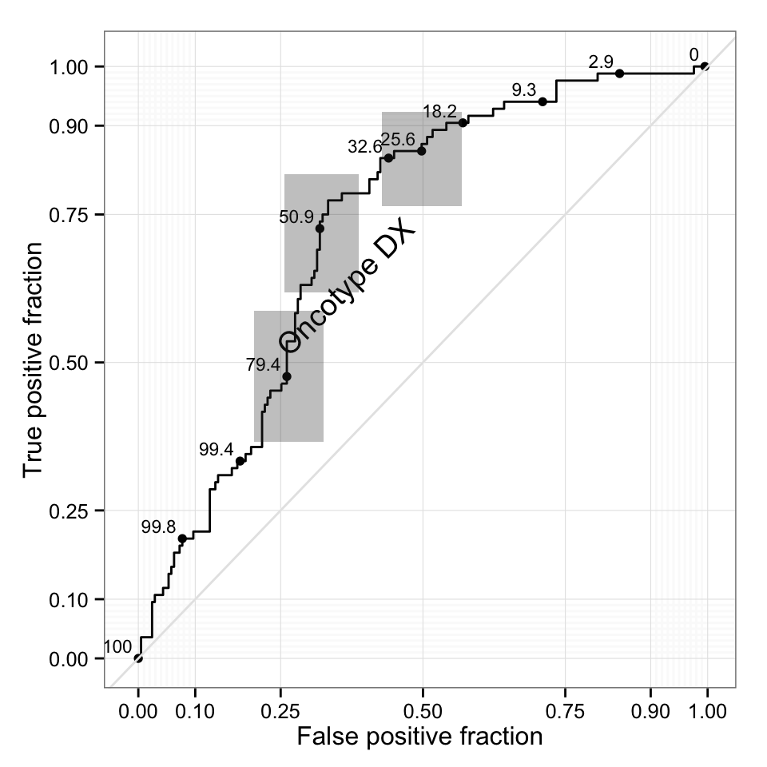
Extension 2
- Binary outcome, good for diagnosis, screening
- What about prognostic/predictive biomarkers?
- Outcome of interest is time to event, i.e. PFS or OS
- Instead of \(D = 1\) we have \(T > t\)
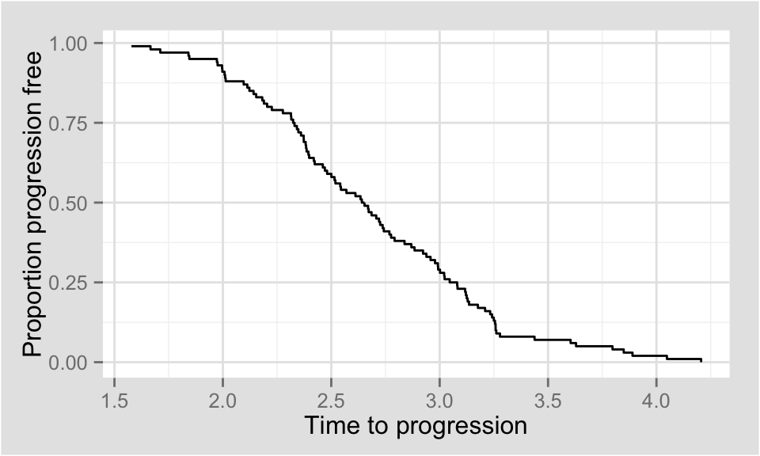
Solutions
- Dichotomize time and proceed as binary
- possibly throwing out data (censoring)
- Use the Kaplan-Meier estimate
- Time-dependent TPF and FPF \[ TPF(c, t) = P(M > c | T \leq t) \] \[ FPF(c, t) = P(M > c | T > t) \]
Time dependent TPF and FPF
A little algebra (Bayes rule again):
\[ TPF(c, t) = \frac{P(T \leq t | M > c) P(M > c)}{P(T \leq t)} \]
The KM curve is an estimate of \(P(T > t)\), and \(P(T > t | M > c)\) in the subgroup with \(M > c\).
Combine that with the proportion of \(M > c\) and we are done.
See Heagerty, Lumley, Pepe, 2000 for more details.
The plot
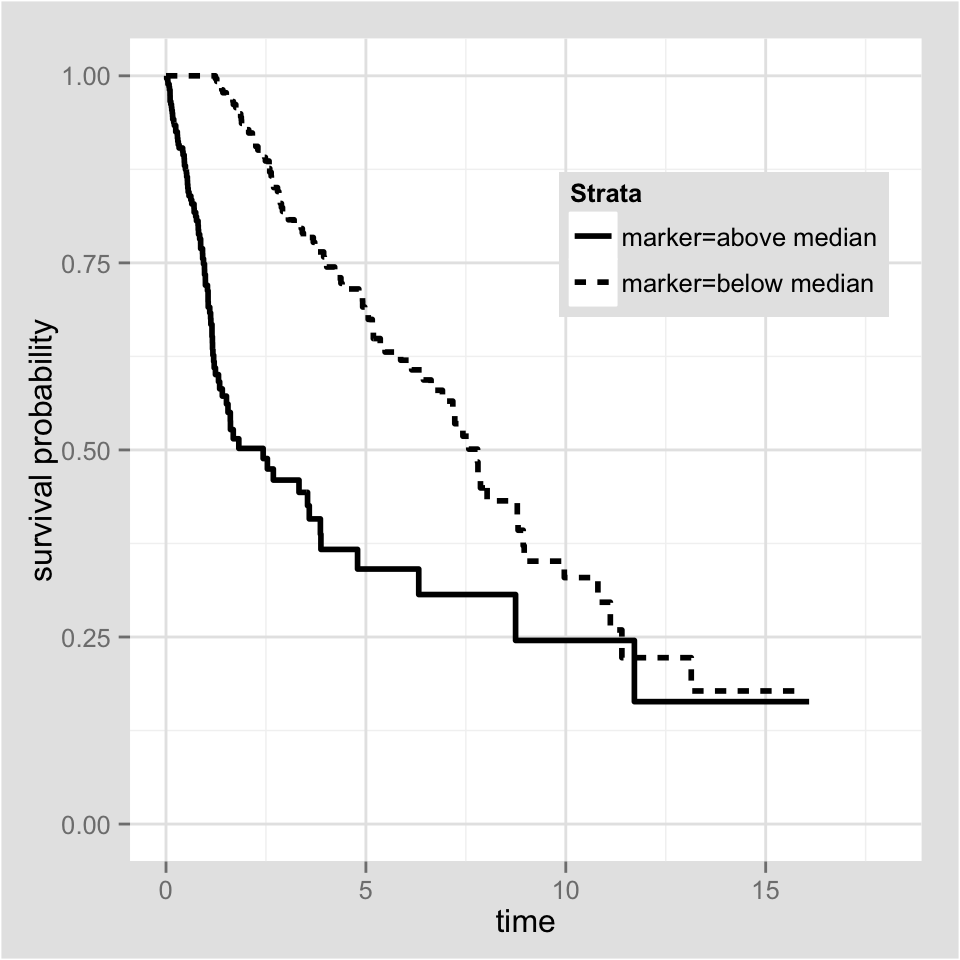
More extensions and questions
- Marker measured longitudinally (\(M(t)\))
- Condition (\(D\)) not directly observable
- Categorical disease state (e.g. Cancer stage)
- Confounding/effect modification
Prospective Accuracy
Retrospective vs Prospective
- Retrospective: Pr(Marker value | disease status)
- TPR, FPR, ROC Curve
- Inherent capacity of marker to classify
- Does not depend on disease prevalence
- Prospective: Pr(Disease or Event | Marker Value)
- PPV, NPV, condition on marker threholds
- Predictiveness curve conditions on marker value
- Risk prediction and medical decision making
- Depend on event rate/disease prevalence
Predictiveness curve
\[ R(v) = Pr\{D = 1 | F(M) = v\}, \] where \(F\) is the CDF of \(M\).
Equivalent to the quantile function of \(Pr\{D = 1 | M\}\). To estimate:
- Model \(Pr\{D = 1 | M\}\) as \(G(\beta; M)\) in some way,
- Estimate \(F\) empirically, \(\hat{F}(m) = n^{-1}\sum 1[M_i < m]\)
- Then \(\hat{R}(v) = G\{\hat{\beta}; \hat{F}^{-1}(M)\}\).
Summary measures
Total gain (TG): \[ TG = \int_{0}^1 | R(t) - \theta | \; dt, \] where \(\theta = Pr\{D = 1\}\).
Area between the curve and the horizontal line
Proportion of explained variation (PEV): \[ PEV = \frac{1}{\theta (1 - \theta)} \int_{0}^1 (p - \theta)^2 \; dR^{-1}(p). \]
Amount of spread in the vertical axis
Partial summary measures
- Quantify the steepness of the predictiveness curve
- Allow for hypothesis testing, comparison of biomarkers
In the presence of low risk/high risk thresholds, calculate partial summary statistics, i.e.
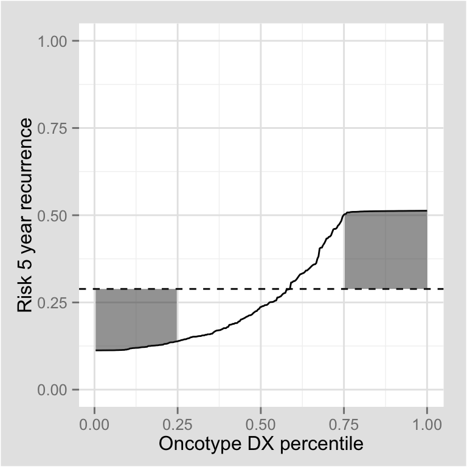
Predictiveness curve summary
- Asymptotic distributions of summary measured calculated using functional delta method
- Permutation-based test statistics to comparing biomarkers
devtools::install_github("sachsmc/predcurver")
library(predcurver)
Easy-to-use R class for estimation, testing, summarizing, and plotting.
See Sachs and Zhou, 2013 for more details
Janes et al. 2014 for extentions to biomarkers for treatment selection
Surrogate endpoints
Definition
Thus far, we've considered biomarkers measured pre-treatment, or in the absence of treatment.
Purpose of a surrogate biomarker is to predict the likely treatment effect on a clinical outcome:
Modeling approaches
- As before, interested in prospective measure, but this time treatment-specific:
\[ Pr\{T < t(0) | M = m(1)\} - Pr\{T < t(0) | M = m(1)\}, \]
\(=\) the conditional risk difference, where \(t(0)\) is the event time under placebo and \(t(1)\) is event time under active treatment
- Some assumptions and special methods allow for estimation of causal effects
Summary curves
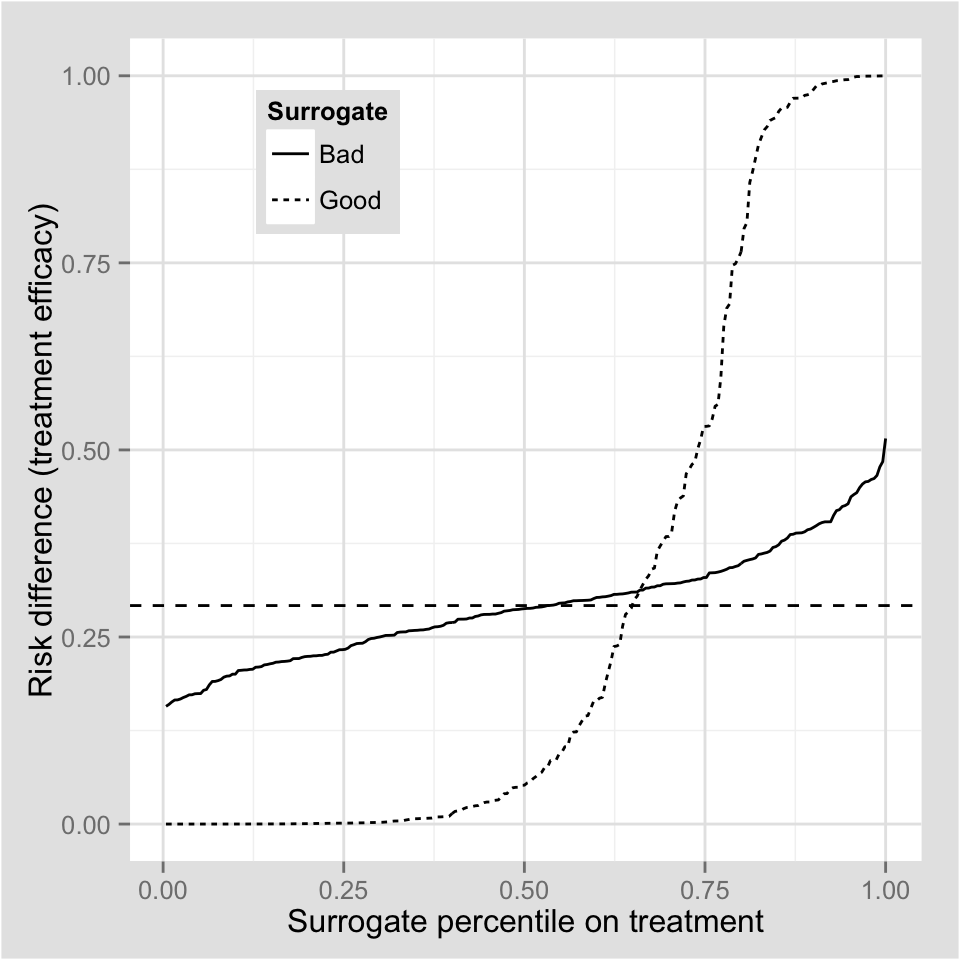
Details
- Gabriel et al. 2015 use a novel Weibull model to estimate causal risks in the time-to-event setting.
- Transformations to get retrospective summaries, \(TPF\) and \(FPF\).
- Also summary statistics such as \(TG\) and \(PEV\) to compare surrogates
- Flexible model that allows for time variation in hazard and treatment effect
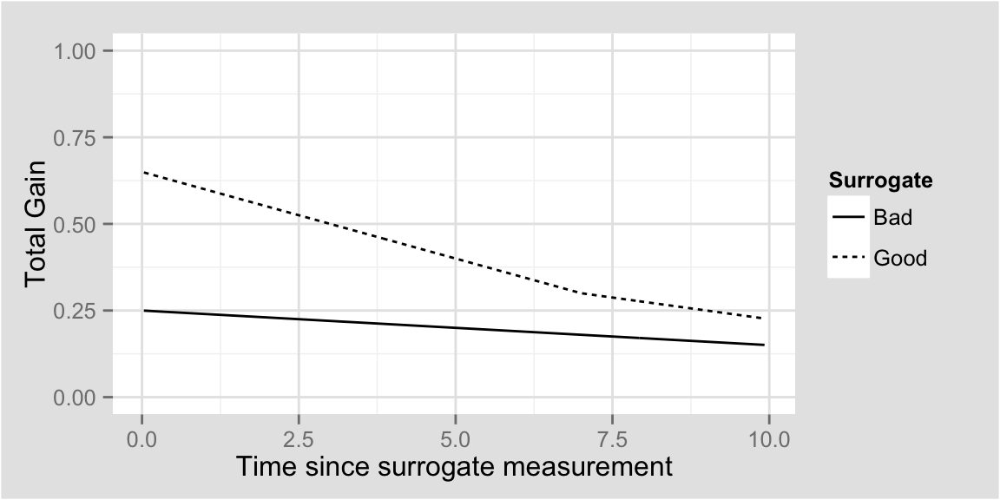
Conclusion
- Methods and tools to comprehensively evaluate biomarkers of all types
- Seeing the data and statistics that researchers care about
- Arbitrary cutoffs and p-value thresholds hinder accumulation of knowledge
- Embrace new technologies to make these tools available to the scientific community
Presentation and source files available at
http://github.com/sachsmc/biomarkers-in-medicine
Thank you!